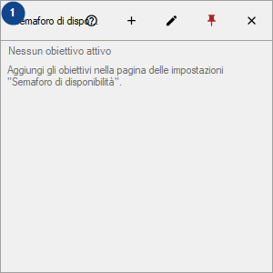
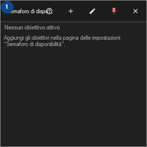

Semaforo di disponibilità
A cosa serve
Un riquadro di tessere per i tuoi host, siti, cartelle e unità; i controlli girano finché CyrFlip è attivo, i risultati restano in memoria.


Ordine delle operazioni
Leggi le spiegazioni numerate, scegli i valori necessari e continua con il comando della finestra.
Elementi
1. Semaforo di disponibilità
Scegli o inserisci il valore indicato dall’etichetta vicina. Controllalo prima di continuare.
Le tue scorciatoie